Projects
Our focus is not only on creating sustainable bags,
but also on creating sustainable relations with our clients.
From material selection to design thinking, this is how we approached our clients requests.
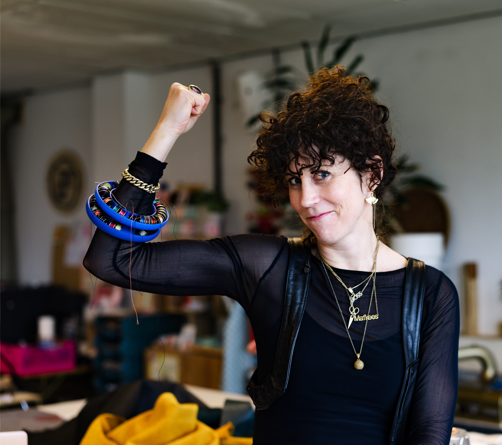
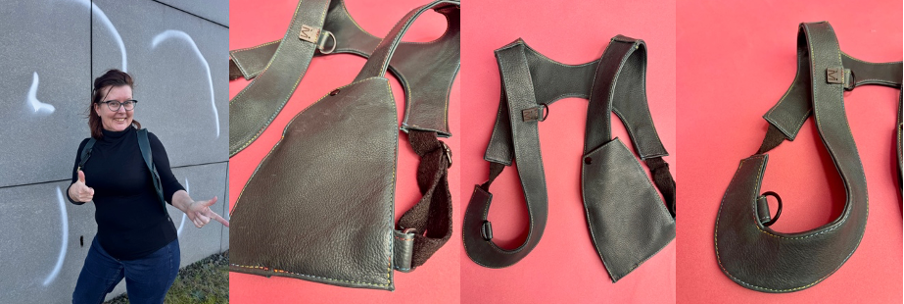
Create
Custom Design
Modern design, traditional craft.
Hands free. Body wrapped. Ready to move.
A pine green leather holster, finished with a rainbow stitch — made to keep up with your movement.
Built for nights out and days on the go.
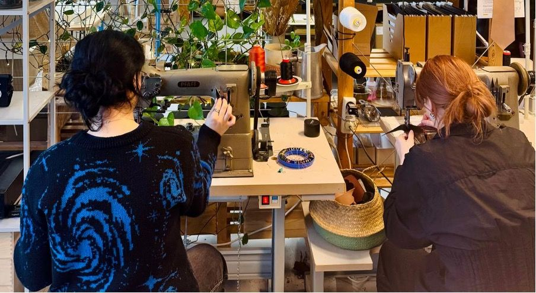
innovation
research team
We’re excited to introduce Sude and Lucie, who have joined us to explore how design can reshape our relationship with what we already own.
Lucie is researching how design solutions can help us reconnect with the sleeping bags sitting in our closets — pieces we once invested in and still hold meaning, yet rarely use. What can help us bring them back into our daily lives?
Sude is exploring how design choices influence our emotional connection to bags made from innovative materials. What makes us truly fall in love with them?
Stay tuned for their findings.
And if you’d like to participate in this research,
And if you’d like to participate in this research: We’d love to hear from you.
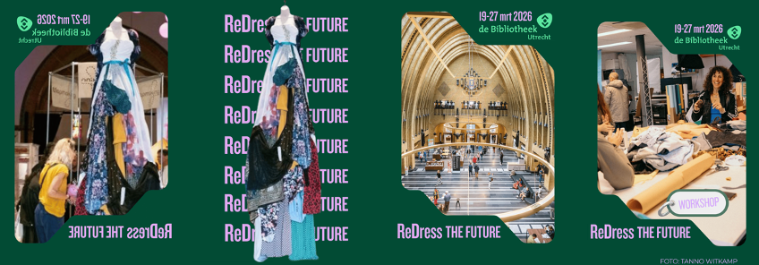
Inspiring
Redress the future
Do you recognize this? Sleeping bags in your closet — gems we once carefully chose, but no longer use, and can’t quite let go of.
In this workshop, we gave them new life through small adjustments and creative additions, so your bag fits you again — and is used with pleasure.
Special thanks to Hanna Felting and Janneke from The Sustainable Stylist for the organization.
It was on of the many awesome activities during Week van de Circulaire Economie, supported by Heel Nederland Repareert.
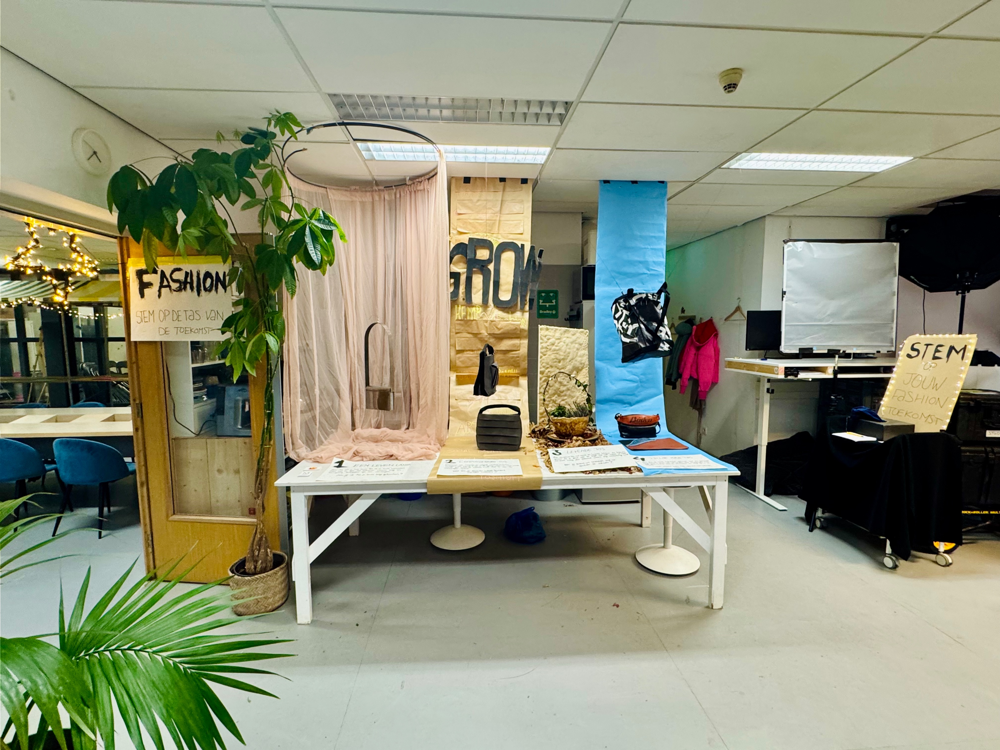
Innovate
vote for the future of fashion
During Winterwinkelen at Kanaal30, Studio Macnas presented The Voting Booth: Vote for the Future of Fashion — an interactive installation inviting visitors to reflect on what bags of the future could be. Rather than simply voting, people discussed, compared, and reconsidered their relationship with fashion, materials, and ownership.
Visitors voted on four speculative bag concepts: The Steel Bag, The Compostable Bag, The Living Bag, and The Tailor-Made Bag.
The results showed a clear preference for The Tailor-Made Bag (43 votes), followed by The Compostable Bag (35), The Steel Bag (18), and The Living Bag (3).
An additional idea emerged from the audience: 🌿 the “Doorgeeftas” — a bag passed from person to person, carrying stories and memories.
The outcome reveals a strong desire for futures rooted in personal connection and circularity — fashion with meaning, responsibility, and longevity.
Thank you to everyone who participated during Winterwinkelen with Makers van Merwede.
Have a look: aftermovie of the expo.
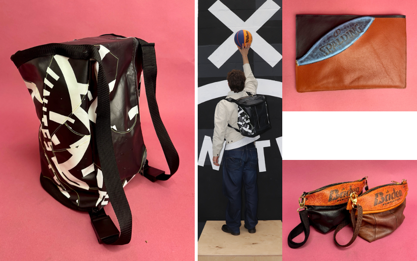
Create
Custom- designed bags for people with LOVE FOR BASKETBALl
When your hobby feels like a part of your identity, you would like to wear it.
Using old basketbals and basketbal banners.
Backpack made with Twan Eshuis for 3x3 unites.
Have a look!
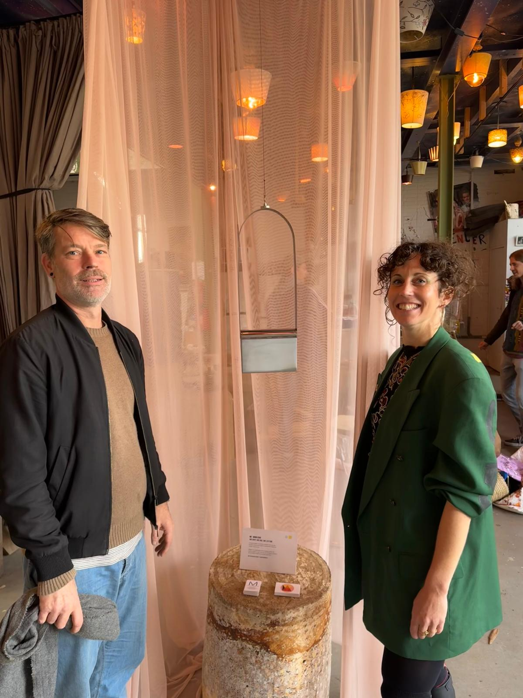
Create
me - mono echo
One body, one bag, one lifetime
Carrying markers of moments, echoes of life and use,
but also echoes of the fashion industry that it becomes
smaller if we use less.
Dave van Rossem & Macnas
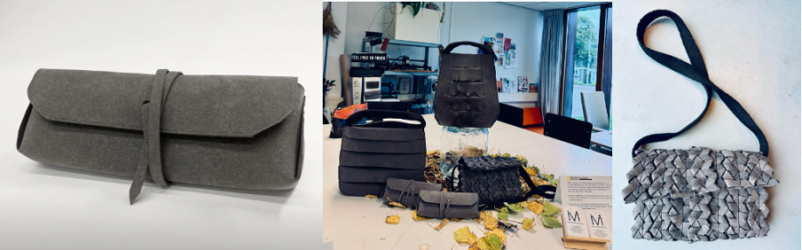
Innovate
Wither: handbag
After the start of the Wither project with Alejandro, we’ve been exploring the beauty of impermanence.
Two new pieces are joining the collection:
- a glasses case
- a handbag
A lovely detail — the weaving technique used for the handbag was learned during our travels to Rwanda this summer, where a group of women generously shared their traditional craft of weaving with banana leaves and sisal.
Wither embraces ephemerality — the natural yet fleeting beauty of things that are not meant to last forever. It challenges the way we consume, where we often expect everything we buy to endure indefinitely. Instead, Wither invites us to value objects precisely because they will one day fade.
This project is a collaboration between Studio Macnas and Alejandro Ramirez (@liquidgeek), with material innovation made possible by Revoltech’s compostable hemp-based material, LOVR.
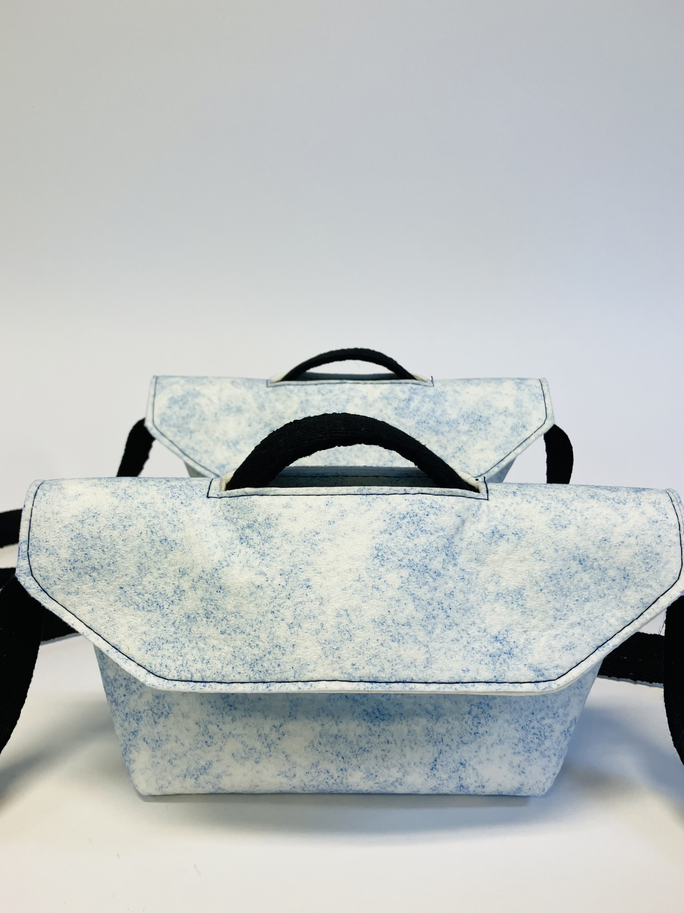
Create
Felt good
This bag is soft, flexible, and compostable—what a feel-good combo!
Material: Terralite by Cosm, a biobased material that’s 50% lyocell and 50% viscose. The company behind this is a true pioneer in sustainable materials!
Strap: As with the first bag, it’s made from European hemp, processed in the EU, and dyed with reactive dyes that meet REACH standards.
Yarn: Tencel, made from 100% biodegradable cellulose from wood pulp. It’s produced in a closed-loop system, meaning it’s biologically compostable and completely sustainable.
The name “Felt Good” says it all. This bag feels great on your skin, but even better for the planet.
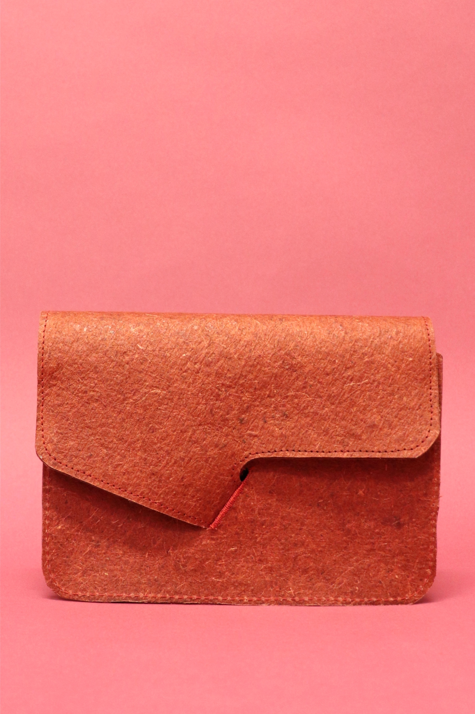
create
Hand in Hand
This compact little bag is all about carefully chosen elements:
Material: Malai—a revolutionary fabric made from organic and sustainable bacterial cellulose, grown from agricultural waste sourced from the coconut industry in Southern India.
Strap: European hemp, dyed with reactive dyes, and processed in the EU to comply with European REACH regulations.
Yarn & Haberdashery: On the path to creating bags that can be buried, not discarded. That’s our goal—no more endless landfills!
The title “Hand in Hand” is equally meaningful. The closure design resembles two hands coming together—because, together, we’re on this innovative journey.
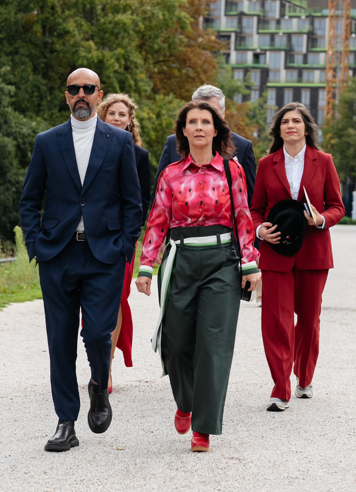
Innovate
Very proud Esther Ouwehand from the Partij voor de Dieren has a Macnas bag with her today at "Prinsjesdag".
The elements of this compact little bag are selected with care. So the bag does not have to end up on the landfill, but can be buried in the soil to compost and let something else grow!
“Rethinking fashion patterns”
Thanks Janneke Cloosterman for connecting me with Victorien van Duuren. Professionals who can style with a greater vision.
Loved working with you Sophie Algra on the design of the bag!

Inspire
Masterclass
Trade Show Communication & Pricing Masterclass
It was wonderful to be able to prepare for Winterwinkelen with so many designers and makers!
During this masterclass, designers learned from experienced experts, Belinda Werschkull and Jan-Paul Deurloo how to present their products and determine prices.
The Winterwinkelen case study offered practical insights.
It was great to see how valuable the panel discussion was—it sparked engaging conversations with the audience and among the speakers.
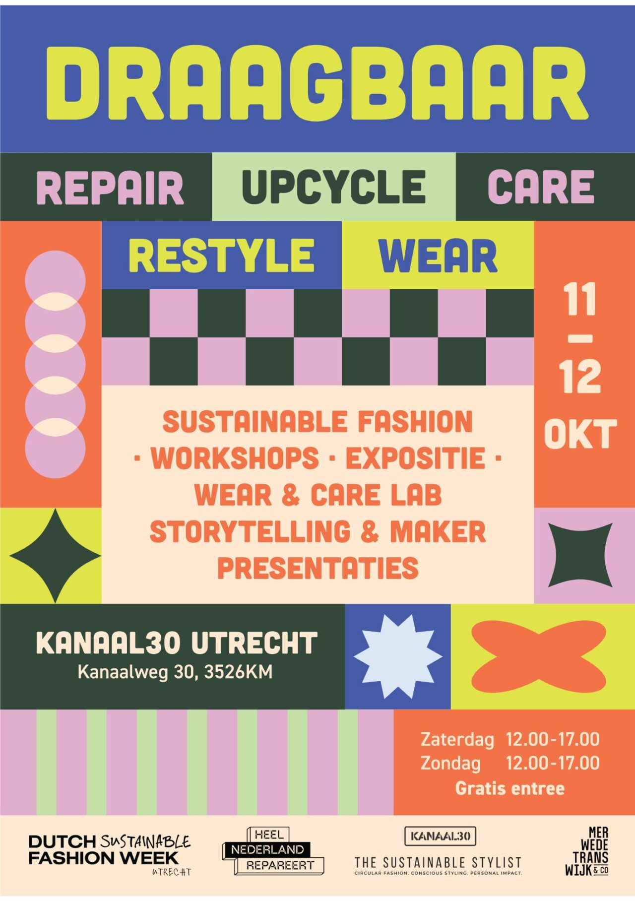
inspire
Draagbaar
Draagbaar was about sharing and caring. Multiple events where combined, making art and conscious fashion reinforce each other.
What a joy to be part of this creative, skilled, inspiring community.
Organizations:
@kanaal30
@draagbaar_utrecht
@dsfw.utrecht
@heelnederlandrepareert
@atelierrouteutrecht
@cosh.eco
And most of all @thesustainablestylist.nl
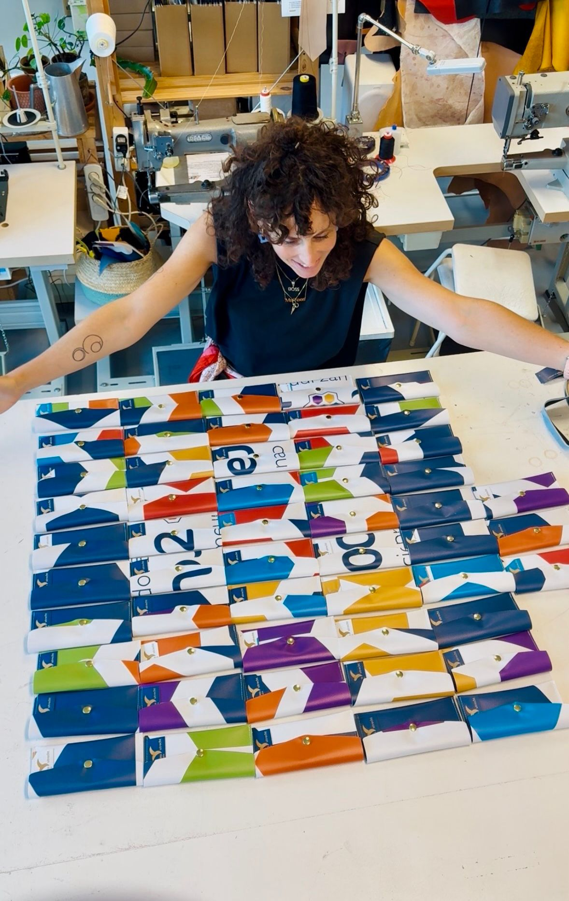
Innovate
Bringing back life in used banner material
Old NMU Roll-Up Banners transformed into Colorful Glasses Cases
At @nmutrecht they care about giving materials a second life. Instead of throwing away our outdated roll-up banners, we upcycled them into vibrant, durable glasses cases.
For this project they teamed up with Macnas and Studio Lanterfant for
the finishing touch. With her laser machine, Moniek added the NMU logo to each case, continuing her own commitment to sustainable, story-rich design.
The result: cheerful, sturdy glasses cases that once carried their campaign messages and now protect sunglasses, reading glasses, phones, and more. A great example of how fun upcycling can be!
Thank you @nmutrecht for this project!
https://www.nmu.nl/nieuws/oude-rolbanners-krijgen-nieuw-leven-als-brillenhoesjes/
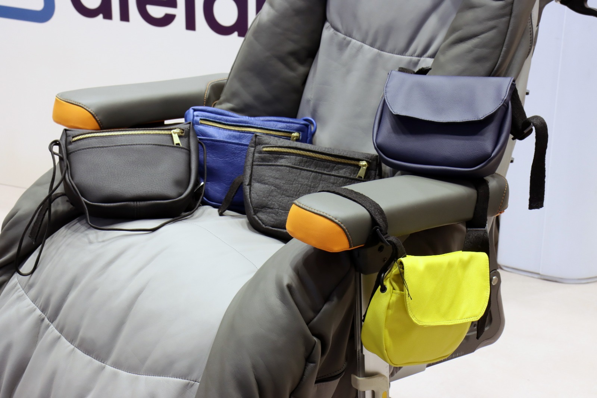
Create
Custom- designed bags for people with disabilities
Together with Aleidis, we developed a collection of small wheelchair bags that are practical, beautiful to look at and thoughtfully made. They are easy to attach, always within reach - because a ringing phone waits for no one.
https://aleidis.com/product/tas-voor-rolstoel/
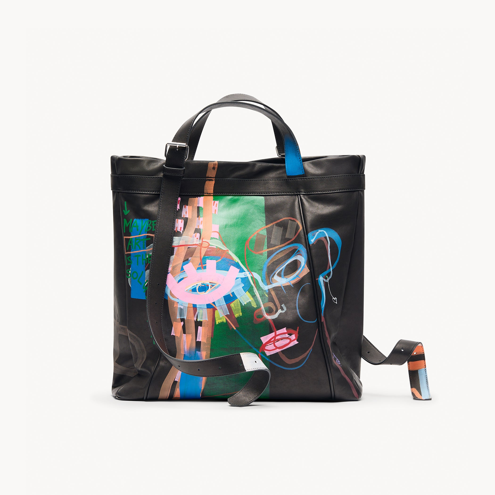
Create
wearable art designed in collaboration with artists
Meet REVUSD - an Art Label in Motion. A new label, a new energy. With a small team, we had the honor of designing bags that carry more than just your stuff - they carry art and meaning.
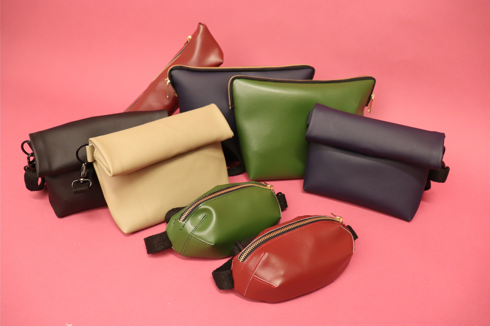
create
cactus christmas gifts
Really enjoyed making the christmas gifts for @ondernemerscollectief!
8 personalized items. Different models each in colors that suit the colleague in question. With a logo as a detail on the bags. All made out of plant based material.
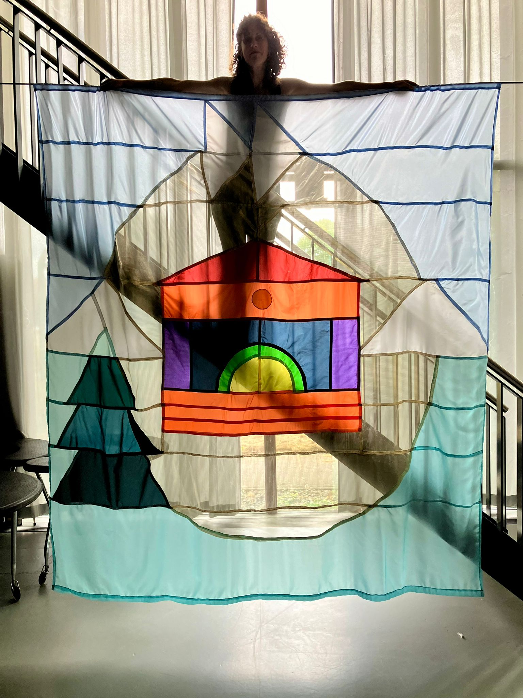
create
Pojagi
For the HU, Marieke de Roos had a glorious vision. To create a statement piece for the SDG-huis toolkit. It needed to be a big enough to communicate the visualisation of the method to help employees work toward the sustainable goals. We decided to upcycle materials as much as possible.
The collection of materials is a collective effort. It connects people and it is always heart warming to see how people like to help!
In this work of art the materials are used of products that weren't used anymore:
• tent bag,
• a tent,
• a kids tipi,
• poncho,
• paraglide chute,
• the bag of the chute,
• shower curtain
....isn't it a miraculous combination of things?!
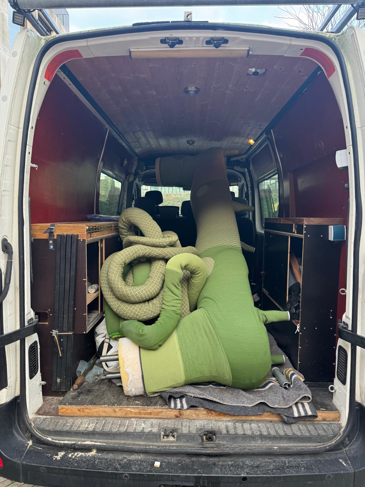
create
Restauration
For a local library I teamed up with Dave van Rossem to work on a special art piece. We restored a big fabtic dinosaur. It was part of the kids departement in the library.
After restoring the fram, washing, filling, patching and zipping the creature, kids can use it again to dream away in their books.
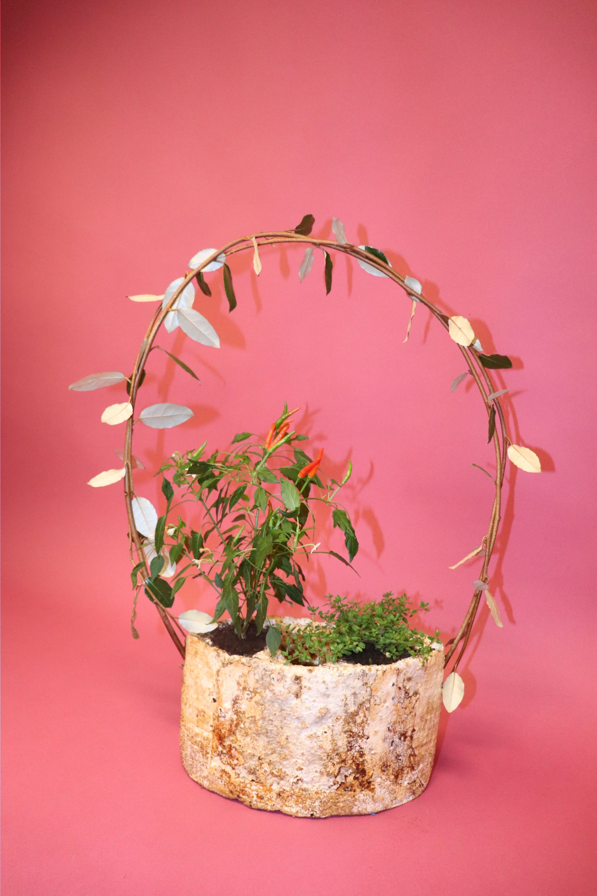
Innovate
Discovering the living, growing dynamic bag
Can you take care of the bag? It gives you herbs, flowers and scents in return.
Grown from mycelium, filled with soil for fresh plants to grow.Enough space for personal belongings such as a phone, keys and a small wallet. The bag is natural, plant based and compostable.
The branches of the band will grow and you will experience the different seasons. Will you let them grow wild? Braid or prune? Or will you choose a bag with herbs or flowers?
What if we use different materials? What if we take better care of what we have? What if we use what is already there? With this bag we want to inspire to rethink current fashion patterns.
Teamed up with :
- De Kiemkamer, Gijs Matser https://kiemkamer.nl
This place is always looking for new natural green explorers to expand their community! They have space for projects to facilitate green and dynamic innovations.
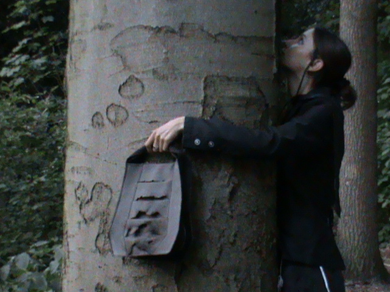
Create
Wither
Wither is a project that explores the embrace of ephemerality, for its natural yet fleeting beauty. It’s an idea inspired by the ways in which we consume, where everything we buy we intend to keep forever. Wither removes this commodity that timelessness offers, teaching buyers to value their objects before they're gone.
Much like living beings, The Withering Bag will age with the user, in a tangible story that highlights the beauty of each life cycle, including the inevitable total decay.
This project came as a collaboration between studio Macnas and Alejandro Ramirez @aleramcon , with the help and supply of Revoltech’s compostable hemp based material: LOVR. @revoltech.official
https://www.revoltech.com
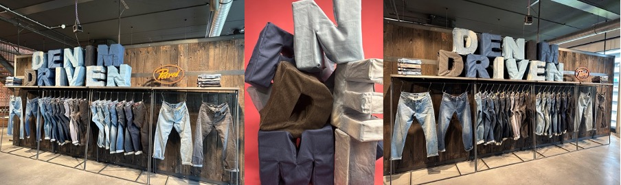
create
Interior objects
The talented Studio van Engelen has a true gift for transforming spaces into experiences, finding materials, makers and products, and weaving them into a story.
We loved being part of this creative adventure, making giant denim letters for a denim story interior.
Teamed up with Leon and Studio Lanterfant on the wooden frames - made partly from reclaimed wood. Found deadstock jeans via shops and big thanks to the neighbours who shared their leftover jeans. Community powered design at its best.
Want more inspiration?
Stay up-to-date with inspiring new stories from Studio Macnas.